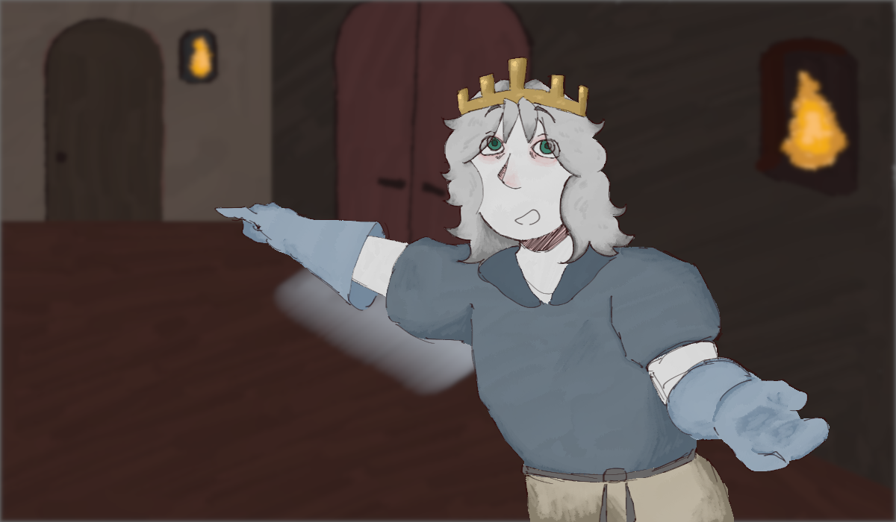

Découverte du château

Il vous montre du doigt deux portes où vous pourrez allez, vous laissant choisir ce que vous voulez faire.

Il vous montre du doigt deux portes où vous pourrez allez, vous laissant choisir ce que vous voulez faire.